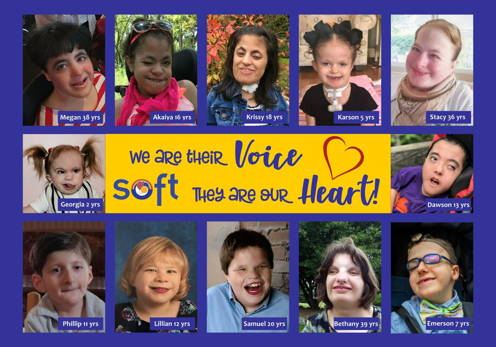

Finding support: local centers, national foundations, and their online resources

Children with Patau Syndrome need access to a Level III or IV NICU, pediatric cardiology, neurology, genetics, and ophthalmology. Here's what we found near us.
Renown Regional Medical Center
The Renown Hospital collaborates with Pediatric Cardiologists and provides pediatric subspecialists. The Renown Hospital has strong ties with the University of Nevada, Reno School of Medicine and the Healthy Nevada Project genetics research network, thus making it the best option for pediatric genetics referral.
phone number: (775) 982-4100
Website: Renown Regional Medical Center
Pediatric Hospital: Renown Children's Hospital
Phone number: (775) 982-5437
Level III NICU
Nevada Early Intervention Services - Reno
Under the IDEA Part C program, Nevada offers free services to children from birth through age 3 who have developmental disabilities.
2667 Enterprise Road, Reno, NV 89512
Phone number: 775-688-1341
Newton Learning Center Second Start
They do evaluations, tests, and make treatment plans.
These organizations work specifically with Trisomy 13 and related conditions at the national level. They offer family support, research funding, educational materials, and connections to specialists.
American Red Cross.
Services including community support, disaster assistance, and health services in Reno.
Website: redcross.org/nv/reno
The Children's Cabinet.
Services for children with special needs and their families, including case management, therapy, and support groups.
Website: childrenscabinet.org
Carolynn's Children & Family Foundation.
A foundation dedicated to supporting children with special needs and their families.
Ranch Respite
Ranch Respite provides respite care and community connections for special needs children and their families.
Give Hope Foundation of Northern Nevada
Financial assistance and other programs for families of seriously ill children.
Ronald McDonald House Charities of Northern Nevada.
Travel-for-Treatment program may help with expenses for traveling for treatment at a distant hospital.
Phone: 775-322-4663
Website: rmhcnnevada.org